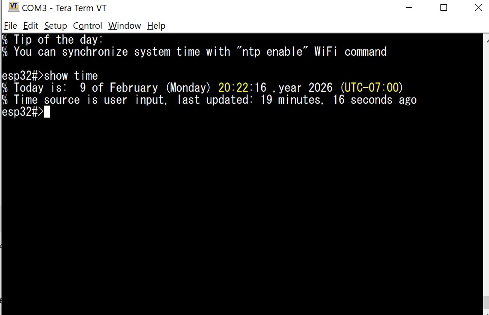

Часы реального времени (RTC) в ESP32 - это не отдельный внешний модуль, а часть внутренней подсистемы чипа, предназначенной для ведения времени независимо от состояния основного CPU. RTC-домен работает от собственного низкочастотного источника тактирования (обычно внутренний RC-осциллятор ~150 кГц или внешний 32.768 кГц кварц) и остаётся активным в режимах light sleep и deep sleep. Благодаря этому ESP32 может сохранять счёт времени даже тогда, когда ядро остановлено или питание сильно ограничено, что критично для энергосберегающих приложений. При выключении питания RTC "обнулится".
С точки зрения timekeeping, RTC в ESP32 отвечает не столько за "календарные" функции, сколько за непрерывный счёт времени и таймеры пробуждения. Само представление времени (Unix time, struct tm и т.п.) реализуется уже на уровне SDK. RTC при этом выступает как аппаратная основа: он обеспечивает ход времени между пробуждениями, хранит счётчик и позволяет точно рассчитать, сколько времени прошло в sleep-режимах. Именно поэтому после выхода из deep sleep ESP32 "знает", сколько секунд прошло, даже если Wi-Fi и CPU были полностью выключены.
Для установки текущего времени и часового пояса используется команда "time" с различными аргументами. Синтаксис достаточно свободный: "time set DATE" где DATE - это строка вида "2026 february" или "10 april 2026" или "sept 10:12 am" и в таком же духе. Порядок аргументов после ключевого слова set не важен, а если какой-то аргумент отсутствует, то соответствующее значение не меняется. Например команда "time set 2026" поменяет лишь значение года, оставив время, число и месяц нетронутыми.
Пример: установить время и дату "28 September 2026 14:21:37"
esp32#>time set 28 September 2026 14:21:37 % New system time/date has been set. (user input) esp32#>Для установки часового пояса следует воспользоваться командой "time zone TIMEZONE", где TIMEZONE - это смещение относительно UTC. Например, можно написать time zone 7, и это будет означать UTC-7:00. Можно задавать и отрицательные смещения, добавляя знак минус: "time zone -1:30" установит часовой пояс в "UTC+01:30"
ESPShell запоминает значение часового пояса в NVS, поэтому после сброса питания и перезагрузки значение time zone утеряно не будет, что важно, например, если у вас настроена SNTP синхронизация
Просматриваем вот так (часы не настроены):
esp32#>show time % Today is: 1 of January (Thursday) 07:00:23 ,year 1970 (UTC-07:00) % Time source is on-chip RTC (volatile), time and/or date may be incorrect esp32#>А так будет выглядеть вывод команды "show time", если время синхронизировано:

Fig. 1: Example output of "show time" command